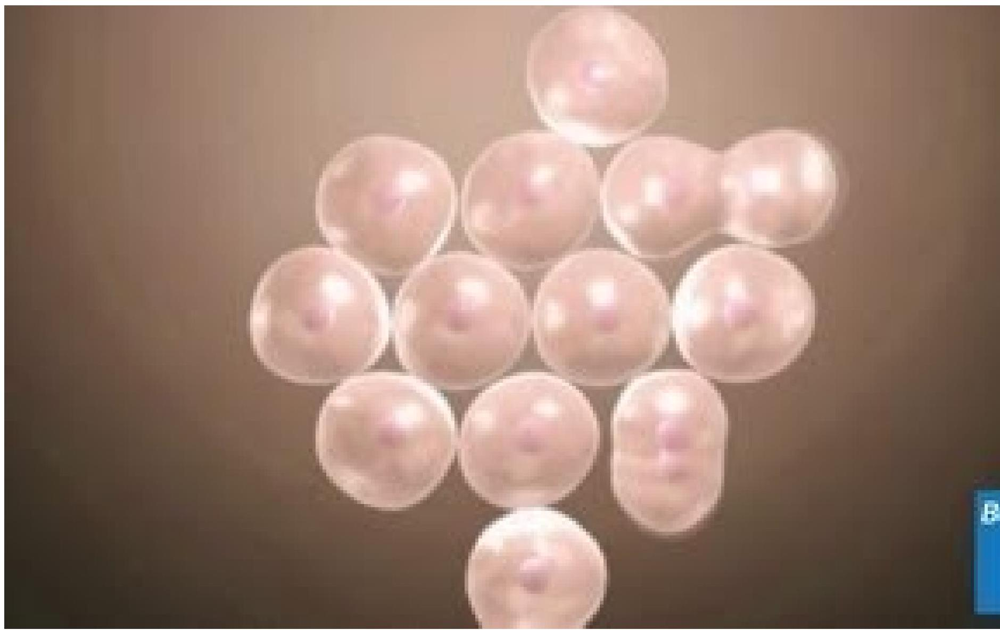
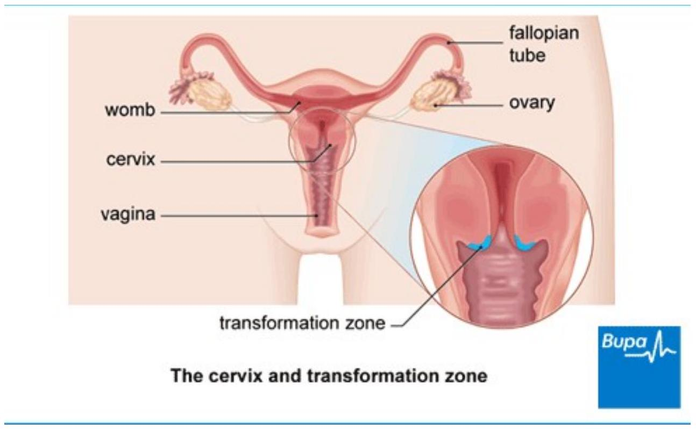
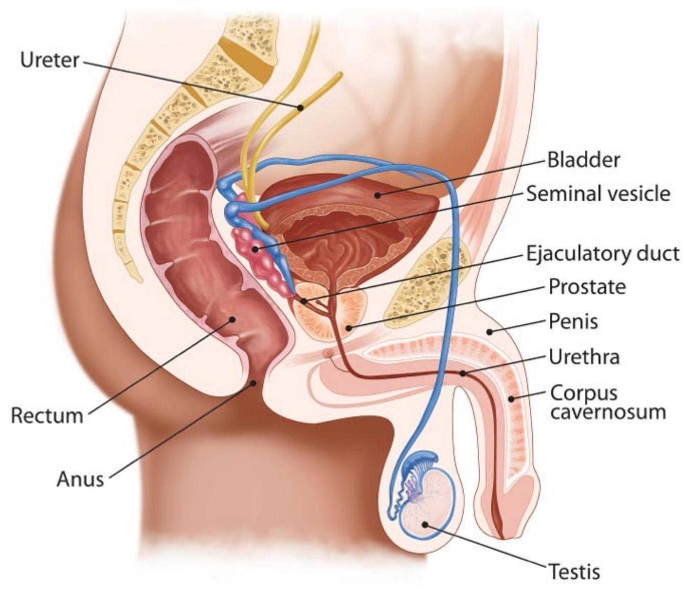

Gynaecological Disorders - Part 3
1. CERVICAL CANCER
Cervical cancer develops when the cells of the cervix (the neck of the uterus) become abnormal and grow out of control . These abnormal cells are often caused by a virus called the human papilloma virus (HPV).
How cancer develops Cells begin to grow in an uncontrolled way
- Types
There are two main types of cervical cancer -
- squamous cell cancer (the most common)
- adenocarcinoma, although they can also be mixed.
They are named after the type of cell that becomes cancerous. Squamous cells are flat cells covering your cervix (the neck of your womb). Adenomatous cells are found in the passageway from the cervix to the womb..
- Symptoms
In the early stages of cervical cancer, you may not have any symptoms, so it's important to go to go for cervical screening appointments. Cervical screening (smear test) is offered to all women between the ages of 25 and 64 every three to five years depending on your age bracket.
If abnormal cells do continue developing into cervical cancer, some of of the symptoms include:
- abnormal vaginal bleeding, for example between periods or after sex
- smelly vaginal discharge
- pain during sex
- vaginal bleeding after menopause
- blood-stained vaginal discharge
- pain in the pelvis
- Diagnosis
The early stages of cervical cancer are usually picked up on a smear test. A smear test takes just a few minutes and involves a nurse or doctor gently putting a speculum (a small instrument) into your vagina. This helps to hold your vagina open while a small brush wipes over the cervix to pick up some cells. If your smear detects abnormal cells on your cervix (the neck of your womb), they're usually at an early pre-cancer stage.
The tests include the following.
- A colposcopy- your doctor uses a lighted magnifying instrument called a colposcope to examine your cervix. He or she may take a small sample of tissue (a biopsy). The sample will be sent to a laboratory for testing to see if the abnormal cells have spread.
- LLETZ (large-loop excision of the transformation zone) also known as loop diathermy - your doctor uses a loop of wire with an electrical current passing through it. This removes the abnormal cells which are then sent to a laboratory for testing.
- A cone biopsy - your doctor will take a cone-shaped portion of tissue from your cervix. The sample will be sent to a laboratory for testing.
- A CT, MRI, PET (positron emission tomography) or ultrasound scan - to check your health and show how far the cancer has spread (if at all).
- Treatment
Your treatment options will be based on the stage of your cancer and your general health. The main treatments are surgery, radiotherapy or a combination of radiotherapy and chemotherapy (chemoradiotherapy).
Surgery
The standard surgical treatment for cervical cancer is a hysterectomy, which involves removing your womb and ovaries. This will include removing the top few centimetres of your vagina and some of the lymph nodes in your pelvis. Lymph nodes (or glands) are part of your body's natural defence system; this is called the lymphatic system. Your surgeon or oncologist may need to remove one or more of your lymph nodes as part of your treatment.
If you have early stage cancer and you want to have children, a procedure called radical trachelectomy might be possible. In this procedure, your surgeon removes most of your cervix but leaves the opening behind, so that you can still have a baby.
Chemotherapy
Chemotherapy is a treatment to destroy cancer cells with drugs. It works by stopping or slowing the growth of cancer cells.
Radiotherapy
is a treatment to destroy cancer cells by use of radiation rays. A beam of radiation is targeted on the cancerous cells, which shrinks the tumour.
Palliative care
Aims to improve the quality of life in a dying patient. You can have these treatments either as an inpatient (where you stay overnight) or as an outpatient (where you visit the hospital for your treatment but g o home afterwards). This will depend on how well you are and what your doctor advises.
2. BREAST CANCER
Breast cancer is one of the most common cancers. Around one in nine women develop breast cancer at some stage in their life. About 48,000 cases occur in the UK each year. Most develop in women over the age of 50 but younger women are sometimes affected. Breast cancer can also develop in men, although this is rare. Breast cancer develops from a cancerous cell which develops in the lining of a duct or lobule of the breasts.
TYPES
Most breast cancers are diagnosed when a tumour has grown from within a duct or lobule into the surrounding breast tissue. These are called invasive breast cancers.
Some people are diagnosed when the cancerous cells are still totally within a duct or lobule. These are called carcinoma in situ, as no cancer cells have grown out from their original site
STAGES
Is determined by how much the cancer has grown and how far it has spread
A sample of breast cancer tissue can be looked at under the microscope. By looking at certain features of the cells, the cancer can be graded.
- Stage 1 - the cancer cells tend to be slow-growing and less aggressive.
- Stage 2 - is a middle grade.
- Stage 3 - the cancer cells tend to be fast-growing and more aggressive.
CAUSES OF BREAST CANCER
The exact reason why a cell becomes cancerous is unclear. It is thought that something damages or alters certain genes in the cell thus making the cell abnormaly multiply out of control.
Risk factors
- Age. The risk of developing breast cancer roughly doubles for every 10 years of age. Most cases develop in women over the age of 50.
- Where you live. The rate of breast cancer varies between countries. This may reflect genetic or environmental factors.
- Family history. This means if you have close relatives who have or have had breast cancer. In particular, if they were aged under 50 when diagnosed.
- If you have had a previous breast cancer.
- Being childless.
- If you had your first child after the age of thirty.
- Not having breast-fed your children.
- Early age of starting periods.
- Chest being exposed to radiation.
- Delayed menopause/over the age of 55.
- Taking continuous combined hormone replacement therapy (HRT) for several years (in women over 50 years), leading to a slightly increased risk.
- Excess alcohol.
SYMPTOMS
A breast lump
The usual first symptom is a painless lump in the breast. Note: most breast lumps are notcancerous. Most breast lumps are fluid-filled cysts or fibroadenomas (a clumping of glandular tissue) which are benign. However, you should always see a doctor if a lump develops, as the breast lump may be cancerous.
Other symptoms which may be noticed in the affected breast include:
- Changes in the size or shape of a breast.
- Dimpling or thickening of some of the skin on a part of a breast.
- The nipple becoming inverted (turning in).
- Rarely, a discharge occurring from a nipple (which may be bloodstained).
- A rare type of breast cancer, causing a rash around the nipple, which can look similar to a small patch of eczema.
- Rarely, pain in a breast. Note: pain is not a usual early symptom. Many women develop painful breasts (mastalgia) and this is not usually caused by cancer.
DIAGNOSIS
- Mammogram. This is a special X-ray of the breast tissue.
- Ultrasound scan of the breast.
- MRI scan of the breast. This is more commonly performed on younger women, who may have denser breast tissue.
Biopsy - to confirm the diagnosis
A biopsy is when a small sample of tissue is removed from a part of the body for exammination under the microscope, to look for abnormal cells. A specialist may take a biopsy with a needle which is inserted into the lump for some cells to be withdrawn. Sometimes the doctor may be guided as to where to insert the needle with the help of a mammogram or ultrasound scan. Sometimes a small operation is needed to obtain a biopsy sample.
The biopsy sample can confirm or rule out breast cancer. Also the cells from a tumour can be assessed and tested to determine their grade and receptor status (see above).
TREATMENT
Treatment options which may be considered include surgery, chemotherapy, radiotherapy and hormone treatment. Often a combination of two or more of these treatments is used. The treatments used depend on:
- The cancer itself - its size and stage (whether it has spread), the grade of the cancer cells, and whether it is hormone responsive or contains HER2 receptors; AND
- The woman with the cancer - your age, whether or not you have had your menopause, your general health and personal preferences for treatment.
You should have a full discussion with a specialist who knows your case. They will be able to give the pros and cons, likely success rate, possible side-effects and other details about the various possible treatment options for your type of cancer.
Surgery
The types of operation which may be considered are:
- Breast-conserving surgery. This is often an option if the tumour is not too big. A lumpectomy (or wide local excision) is one type of operation where just the tumour and some surrounding breast tissue are removed. It is usual to have radiotherapy following this operation. This aims to kill any cancer cells which may have been left in the breast tissue.
- Removal of the affected breast (mastectomy). This may be necessary if there is a large tumour or a tumour in the middle of the breast. It is often possible to have breast reconstructive surgery to create a new breast following a mastectomy. This can often be done at the same time as the mastectomy, although it can also be done months or years later. There now are many different types of reconstruction operations available.
- A sentinel lymph node biopsy may be performed. This is a way of assessing if the main lymph nodes draining the breast contain cancer. If they are clear then the remaining lymph nodes in the armpit will not need to be removed. If it is not possible to do this, one or more of the lymph nodes in the armpit may be removed. This helps to stage the disease accurately and to guide the specialist as to what treatment to advise following surgery.
Radiotherapy
Radiotherapy is a treatment which uses high-energy beams of radiation which are focused on cancerous tissue. This kills cancer cells, or stops cancer cells from multiplying. See separate leaflet called Radiotherapy for more details.
For breast cancer, radiotherapy is mainly used in addition to surgery. For example, if you have breast-conserving surgery it is usual to have radiotherapy to the affected breast after the operation. This aims to prevent breast cancer returning in the same breast. When radiotherapy is used in addition to surgery it is called adjuvant radiotherapy.
Hormone treatments
Some types of breast cancer are affected by the female hormones oestrogen and progesterone. These hormones stimulate the cancer cells to divide and multiply. Most oestrogen and progesterone are made by the ovaries. Treatments which reduce the level of these hormones, or prevent them from working, are commonly used in people with breast cancer.
Hormone treatment works best in women with hormone-responsive breast cancer, but they sometimes work in cancers classed as non-hormone-responsive.
Hormone treatments include:
- Oestrogen blockers. Tamoxifen has been available for many years and is still widely used. It works by blocking the oestrogen from working on cells. It is usually taken for five years. Other oestrogen blocker medicines are now available.
- Aromatase inhibitors. These are medicines which work by blocking the production of oestrogen in body tissues. They are used in women who have gone through the menopause. These medicines include anastrozole, letrozole and exemestane.
- Gonadotrophin-releasing hormone (GnRH) analogues. These medicines work by greatly reducing the amount of oestrogen that you make in the ovaries. There are several GnRH analogue preparations. The commonly used one is goserelin. They are usually given by injection and may be used for women who have not yet reached the menopause.
- An alternative which may be considered for women before the menopause is to remove the ovaries (or to destroy them with radiotherapy). This stops oestrogen from being made.
Chemotherapy
Chemotherapy is a treatment of cancer by using anti-cancer medicines which kill cancer cells, or stop them from multiplying. See separate leaflet called Chemotherapy with Cytotoxic Medicines for more details.
When chemotherapy is used in addition to surgery it is known as adjuvant chemotherapy. For example, following surgery you may be given a course of chemotherapy. This aims to kill any cancer cells which may have spread from the main tumour site.
Chemotherapy is sometimes given before surgery to shrink a tumour so that surgery may have a better chance of success and also a smaller operation may be performed. This is known as neoadjuvant chemotherapy. The type of chemotherapy given may depend on the type of cancer.
New gene tests are being developed to help doctors decide which women will benefit the most from chemotherapy.
Chemotherapy may also be used for some women to treat breast cancer which has spread to other areas of the body.
3. PROSTATE CANCER
What is the prostate?
The prostate is an exocrine gland of the male reproductive system, and exists directly under the bladder, in front of the rectum. An exocrine gland is one whose secretions end up outside the body e.g. prostate gland and sweat glands. It is approximately the size of a walnut.
Diagram of the location of the prostate gland and nearby organs The urethra - a tube that goes from the bladder to the end of the penis and carries urine and semen out of the body - goes through the prostate.
There are thousands of tiny glands in the prostate - they all produce a fluid that forms part of the semen. This fluid also protects and nourishes the sperm. When a male has an orgasm the seminal-vesicles secrete a milky liquid in which the semen travels. The liquid is produced in the prostate gland, while the sperm is kept and produced in the testicles. When a male climaxes (has an orgasm) contractions force the prostate to secrete this fluid into the urethra and leave the body through the penis.
Urine control
As the urethra goes through the prostate: the prostate gland is also involved in urine control (continence) with the use of prostate muscle fibers. These muscle fibers in the prostate contract and release, controlling the flow of urine flowing through the urethra.
The Prostate Produces Prostate-specific antigen (PSA)
The epithelial cells in the prostate gland produce a protein called PSA (prostate-specific antigen). The PSA helps keep the semen in its liquid state. Some of the PSA escapes into the bloodstream. We can measure a man's PSA levels by checking his blood. If a man's levels of PSA are high, it might be an indication of either prostate cancer or some kind of prostate condition.
Prostate cancer
In the vast majority of cases, the prostate cancer starts in the gland cells - this is called adenocarcinoma. In this article, prostate cancer refers just to adenocarcinoma.
Prostate cancer is mostly a very slow progressing disease. In fact, many men die of old age, without ever knowing they had prostate cancer - it is only when an autopsy is done that doctors know it was there. Several studies have indicated that perhaps about $80\%$ of all men in their eighties had prostate cancer when they died, but nobody knew, not even the doctor.
Experts say that prostate cancer starts with tiny alterations in the shape and size of the prostate gland cells Prostatic intraepithelial neoplasia (PIN).
Classification of prostate cancer
It is important to know the stage of the cancer, or how far it has spread. Knowing the cancer stage helps the doctor define prognosis - it also helps when selecting which therapies to use. The most common system today for determining this is the TNM (Tumor/Nodes/Metastases). This involves defining the size of the tumor, how many lymph nodes are involved, and whether there are any other metastases. When defining with the TNM system, it is crucial to distinguish between cancers that are still restricted just to the prostate, and those that have spread elsewhere. Clinical T1 and T2 cancers are found only in the prostate, and nowhere else, while T3 and T4 have spread outside the prostate.
There are many ways to find out whether the cancer has spread. Computer tomography will check for spread inside the pelvis, bone scans will decide whether the cancer has spread to the bones, and endorectal coil magnetic resonance imaging will evaluate the prostatic capsule and the seminal vesicles.
The Gleason Score
A pathologist will look at the biopsy samples under a microscope. If cancer tissue is detected, the pathologist then grades the tumor. The Gleason System of grading goes from 2 to 10. The higher the number, the more abnormal the tissues are compared to normal prostate tissue.
Two numbers are added up to get a Gleason score:
- A number from 1 to 5 for the most common pattern observed under the microscope. This is the predominant grade and must be more than $51\%$ of the sample.
- A number from 1 to 5 for the second most common pattern. This is the secondary grade and must make up more than 5% but less than 50% of the sample.
A Gleason score of 7 can have two meanings. Look at these two examples below:
- If the predominant grade is 3 and the secondary grade is 4 , the Gleason score is 7 .
- If the predominant grade is 4 and the secondary grade is 3 , the Gleason score is also 7 .
However, the first example, with a predominant score of 3, has a less aggressive cancer than the second example, with a predominant score of 4.
Signs and symptoms of prostate cancer
During the early stages of prostate cancer there are usually no symptoms. Most men at this stage find out they have prostate cancer after a routine check up or blood test. When symptoms do exist, they are usually one or more of the following:
- The patient urinates more often
- The patient gets up at night more often to urinate
- He may find it hard to start urinating
- He may find it hard to keep urinating once he has started
- There may be blood in the urine
- Urination might be painful
- Ejaculation may be painful (less common)
- Achieving or maintaining an erection may be difficult (less common).
If the prostate cancer is advanced the following symptoms are also possible:
- Bone pain, often in the spine (vertebrae), pelvis, or ribs
- The proximal part of the femur can be painful
- Leg weakness (if cancer has spread to the spine and compressed the spinal cord)
- Urinary incontinence (if cancer has spread to the spine and compressed the spinal cord)
- Fecal incontinence (if cancer has spread to the spine and compressed the spinal cord).
Causes of prostate cancer
Nobody is really sure of what the specific causes are.
RISK FACTORS
- Age
Age is considered as the primary risk factor. The older a man is, the higher is his risk. Prostate cancer is rare among men under the age of 45 , but much more common after the age of 50 .
- Genetics
Statistics indicate that genetics is definitely a factor in prostate cancer risk. It is more common among certain racial groups - in the USA prostate cancer is significantly more common and also more deadly among AfroAmericans than White-Americans. A man has a much higher risk of developing cancer if his identical twin has it. A man whose brother or father had/had prostate cancer runs twice the risk of developing it, compared to other men.
- Diet
A review of diets indicated that the Mediterranean dietmay reduce a person's chances of developing prostate cancer. Another study indicates that soy, selenium andgreen tea, offer additional possibilities for disease prevention - however, a more recent study indicated that combination therapy of vitamin E, selenium and soy does not prevent the progression from high-grade prostatic intraepithelial neoplasia (HGPIN) to prostate cancer. A diet high in vegetable consumption was found in a study to be beneficial. A US pilot study on men with low risk prostate cancer found that following an intensive healthy diet and lifestyle regime focusing on low meat and high vegetable and fruit intake, regular exercise, yoga stretching, meditation and support group participation, can alter the way that genes behave and change the progress of cancer, for instance by switching on tumor killers and turning down tumor promoters. Other studies have indicated that lack of vitamin $\mathbf{D}$, a diet high in red meat may raise a person's chances of developing prostate cancer.
A study published in the journal Clinical Cancer Research suggests vitamin D deficiency may predict aggressive prostate cancer.
- Medication
Some studies say there might be a link between the daily use of anti-inflammatory medicines and prostate cancer risk. A study found that statins, which are used to lower cholesterol levels, may lower a person's risk of developing prostate cancer.
- Obesity
A study found a clear link between obesity and raised prostate cancer risk, as well as a higher risk of metastasis and death among obese people who develop prostate cancer.
- Sexually transmitted diseases (STDs)
Men who have had gonorrhea have a higher chance of developing prostate cancer, according to research from the University of Michigan Health System.
- Agent Orange
Veterans exposed to Agent Orange have a $48\%$ higher risk of prostate cancer recurrence following surgery than their unexposed peers, and when the disease comes back, it seems more aggressive, researchers say. Another study found that Vietnam War veterans who had been exposed to Agent Orange have significantly increased risks of prostate cancer and even greater risks of getting the most aggressive form of the disease as compared to those who were not exposed.
- Enzyme PRSS3 linked to aggressive prostate cancer
Scientists from the Mayo Clinic, Florida, reported in Molecular Cancer Research that PRSS3, an enzyme, changes the environment of prostate cancer cells, making the cancer much more likely to metastasize. Senior researcher, Evette Radisky, Ph.D., said "This molecule is a protease, which means it digests other molecules. Our data suggests PRSS3 activity changes the environment around prostate cancer cells - perhaps by freeing them from surrounding tissue - to promote malignancy and invasiveness. I don't think PRSS3 is the only factor involved in driving aggressive prostate cancer, but it may be significant for a certain subset of this cancer - the kind that is potentially lethal."
Treatments for prostate cancer
The following treatments are separated into early stage and advanced stage prostate cancers.
Early stage prostate cancer
If the cancer is small and contained - localized - it is usually managed by one of the following treatments:
- Watchful waiting - not immediate treatment is carried out. PSA blood levels are regularly monitored.
- Radical prostatectomy - the prostate is surgically removed.
- Brachytherapy - radioactive seeds are implanted into the prostate.
- Conformal radiotherapy - the radiation beams are shaped so that the region where they overlap is as close to the same shape as the organ or region that requires treatment, thus minimizing healthy tissue exposure to radiation.
- Intensity modulated radiotherapy - beams with variable intensity are used. An advanced form of conformal radiotherapy usually delivered by a computer-controlled linear accelerator.
Treatment recommendations really depend on individual cases. In general, if there is a good prognosis and the cancer is in its early stages, all options can be considered. However, they all have their advantages and disadvantages. The patient should discuss available options thoroughly with his doctor.
complications
- Metastasis - the cancer can spread to other parts of the body through the bloodstream or the lymphatic system to other organs or bones. If the cancer spreads to the ureters, the tubes that carry urine from the kidneys to the bladder, there is a risk of serious kidney problems.
If the cancer spreads to the bones, there may be pain and fractures. Doctors say that when prostate cancer has spread to other parts of the body, it can no longer be cured, but may possibly be controlled.
- Incontinence - the prostate cancer itself, or treatments can cause urinary incontinence.
- Erectile dysfunction - the prostate cancer or prostate cancer treatment can lead to erectile dysfunction the inability to achieve a penile erection, or maintain one.
- Metabolic disorders - a man's risk of dying from prostate cancer is much higher if he has high blood pressure, raised blood sugar levels, high blood lipid levels, and a high BMI (body mass index), which collectively are known as metabolic factors. This was reported in the journal Cancer (October 2012 issue) by scientists from Umeå University in Sweden.
4.ENDOMETRIAL CANCER
Endometrial cancer is a type of cancer that begins in the uterus. The uterus is the hollow, pear-shaped pelvic organ in women where fetal development occurs.
Endometrial cancer begins in the layer of cells that form the lining (endometrium) of the uterus. Endometrial cancer is sometimes called uterine cancer. Other types of cancer can form in the uterus, including uterine sarcoma, but they are much less common than endometrial cancer.
Endometrial cancer is often detected at an early stage because it frequently produces abnormal vaginal bleeding, which prompts women to see their doctors. If endometrial cancer is discovered early, removing the uterus surgically often cures endometrial cancer.
SIGNS AND SYMPTOMS
- Vaginal bleeding after menopause
- Bleeding between periods
- An abnormal, watery or blood-tinged discharge from your vagina
- Pelvic pain
- Pain during intercourse
CAUSES
The genetic mutation turns normal, healthy cells into abnormal cells. Healthy cells grow and multiply at a set rate, eventually dying at a set time. Abnormal cells grow and multiply out of control, and they don't die at a set time. The accumulating abnormal cells form a mass (tumor). Cancer cells invade nearby tissues and can separate from an initial tumor to spread elsewhere in the body (metastasize).
RISK FACTORS
- Changes in the balance of female hormones in the body. Your ovaries make two main female hormones - estrogen and progesterone. Fluctuations in the balance of these hormones cause changes in your endometrium.
A disease or condition that increases the amount of estrogen, but not the level of progesterone, in your body can increase your risk of endometrial cancer. Examples include irregular ovulation patterns, such as can occur in women with polycystic ovary syndrome, obesity and diabetes. Taking hormones after menopause that contain estrogen but not progesterone increases the risk of endometrial cancer.
A rare type of ovarian tumor that secretes estrogen also can increase the risk of endometrial cancer.
- More years of menstruation. Starting menstruation at an early age - before age 12 - or beginning menopause later increases the risk of endometrial cancer. The more periods you've had, the more exposure your endometrium has had to estrogen.
- Never having been pregnant. Women who have never been pregnant have a higher risk of endometrial cancer than do women who have had at least one pregnancy.
- Older age. As you get older, your risk of endometrial cancer increases. The majority of endometrial cancer occurs in older women who have undergone menopause.
- Obesity. Being obese increases your risk of endometrial cancer. This may occur because excess body fat alters your body's balance of hormones.
- Hormone therapy for breast cancer. Women with breast cancer who take the hormone therapy drug tamoxifen have an increased risk of developing endometrial cancer. If you're taking tamoxifen, discuss this risk with your doctor. For most women, the benefits of tamoxifen outweigh the small risk of endometrial cancer.
- An inherited colon cancer syndrome. Hereditary nonpolyposis colorectal cancer (HNPCC) is a syndrome that increases the risk of colon cancer and other cancers, including endometrial cancer. HNPCC occurs because of a gene mutation passed from parents to children. If a family member has been diagnosed with HNPCC, discuss your risk of the genetic syndrome with your doctor. If you've been diagnosed with HNPCC, ask your doctor what cancer screening tests you should undergo.
COMPLICATIONS
Endometrial cancer can spread to other parts of your body, making it more difficult to treat successfully. Endometrial cancer that spreads (metastasizes) most often travels to the lungs.
5.0VARIAN CANCER
Ovarian cancer is a type of cancer that begins in the ovaries. Ovarian cancer often goes undetected until it has spread within the pelvis and abdomen. At this late stage, ovarian cancer is more difficult to treat and is frequently fatal. Early-stage ovarian cancer, in which the disease is confined to the ovary, is more likely to be treated successfully.
Surgery and chemotherapy are generally used to treat ovarian cancer.
SYMPTOMS
Early-stage ovarian cancer rarely causes any symptoms. Advanced-stage ovarian cancer may cause few and nonspecific symptoms that are often mistaken for more common benign conditions, such as constipation or irritable bowel.
Signs and symptoms of ovarian cancer may include:
- Abdominal bloating or swelling
- Quickly feeling full when eating
- Weight loss
- Discomfort in the pelvis area
- Changes in bowel habits, such as constipation
- A frequent need to urinate
CAUSES
In general, cancer begins when a genetic mutation turns normal cells into abnormal cancer cells. Cancer cells quickly multiply, forming a mass (tumor). They can invade nearby tissues and break off from an initial tumor to spread elsewhere in the body (metastasize).
Types of ovarian cancer
The type of cell where the cancer begins determines the type of ovarian cancer you have. Ovarian cancer types include:
- Epithelial tumors, which begin in the thin layer of tissue that covers the outside part of the ovaries. About 90 percent of ovarian cancers are epithelial tumors.
- Stromal tumors, which begin inside the ovarian tissue that contains hormone-producing cells. These tumors are usually diagnosed at an earlier stage than other ovarian tumors. About 7 percent of ovarian tumors are stromal.
- Germ cell tumors, which begin in the egg-producing cells. These rare ovarian cancers tend to occur in younger women.
RISK FACTORS
- Age. Ovarian cancer can occur at any age but is most common in women ages 50 to 60 years.
- Inherited gene mutation. A small percentage of ovarian cancers are caused by an inherited gene mutation. The genes known to increase the risk of ovarian cancer are called breast cancer gene 1 (BRCA1) and breast cancer gene 2 (BRCA2). These genes were originally identified in families with multiple cases of breast cancer, which is how they got their names, but women with these mutations also have a significantly increased risk of ovarian cancer.
The gene mutations that cause Lynch syndrome, which is associated with colon cancer, also increase a woman's risk of ovarian cancer.
- Estrogen hormone replacement therapy, especially with long-term use and in large doses.
- Age when menstruation started and ended. If you began menstruating before age 12 or underwent menopause after age 52, or both, your risk of ovarian cancer may be higher.
- Never being pregnant.
- Fertility treatment.
- Smoking.
- Use of an intrauterine device.
- Polycystic ovary syndrome.
If you have a genetic predisposition to ovarian cancer, your doctor may recommend regular pelvic imaging and blood tests to screen for the disease.
6. VULVA CANCER
Vulva cancer is a type of cancer that occurs on the outer surface area of the female genitalia. The vulva is the area of skin that surrounds the urethra and vagina, including the clitoris and labia.
Vulvar cancer commonly presents as a lump or sore on the vulva that often causes itching. Though it can occur at any age, vulvar cancer is most commonly diagnosed in older women.
SYMPTOMS
Signs and symptoms of vulvar cancer may include:
- Itching that doesn't go away
- Pain and tenderness
- Bleeding that isn't $f$ rom menstruation
- Skin changes, such as color changes or thickening
- A lump, wart-like bumps or an open sore (ulcer)
CAUSES
In general, doctors know that cancer begins when a cell develops mutations in its DNA. The mutations allow the cell to grow and divide rapidly. The cell and its offspring go on living when other normal cells would die. The accumulating cells form a tumor that may be cancerous, invading nearby tissue and spreading to other parts of the body.
Types of vulvar cancer
The type of cell in which vulvar cancer began. The most common types of vulvar cancer include:
- Vulvar squamous cell carcinoma. This cancer begins on the mucusal cells that line the surface of the vulva. Most vulvar cancers are squamous cell carcinomas.
- Vulvar melanoma. This cancer begins in the pigment-producing cells found in the skin of the vulva.
FISK FACTORS
- Increasing age. The risk of vulvar cancer increases with age, though it can occur at any age. The average age at diagnosis is 65.
- Being exposed to human papillomavirus (HPV). HPV is a sexually transmitted infection that increases the risk of several cancers, including vulvar cancer and cervical cancer. Many young, sexually active women are exposed to HPV, but for most the infection goes away on its own. For some, the infection causes cell changes and increases the risk of cancer in the future.
- Smoking. Smoking cigarettes increases the risk of vulvar cancer.
- Being infected with the human immunodeficiency virus (HIV). This sexually transmitted virus weakens the immune system, which may make you more susceptible to HPV infections, thereby increasing your risk of vulvar cancer.
- Having a history of precancerous conditions of the vulva. Vulvar intraepithelial neoplasia is a precancerous condition that increases the risk of vulvar cancer. Most women with vulvar intraepithelial neoplasia will never develop cancer, but a small number do go on to develop invasive vulvar cancer. For this reason, your doctor may recommend treatment to remove the area of abnormal cells and periodic follow-up checks.
- Having a skin condition involving the vulva. Lichen sclerosus, which causes the vulvar skin to become thin and itchy, increases the risk of vulvar cancer.